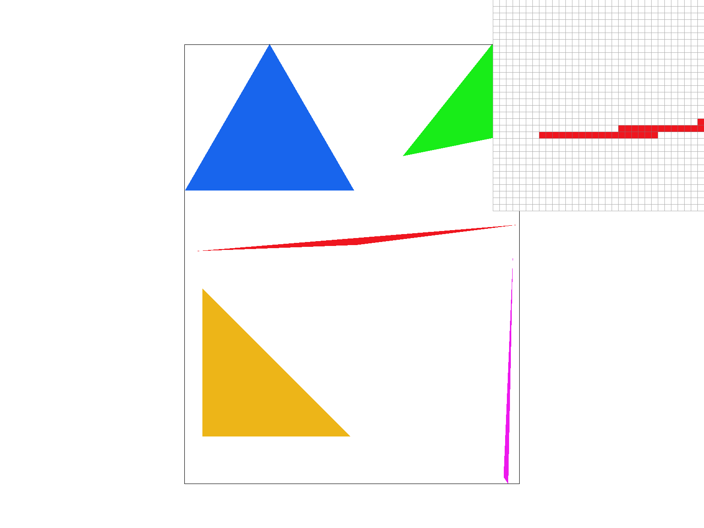
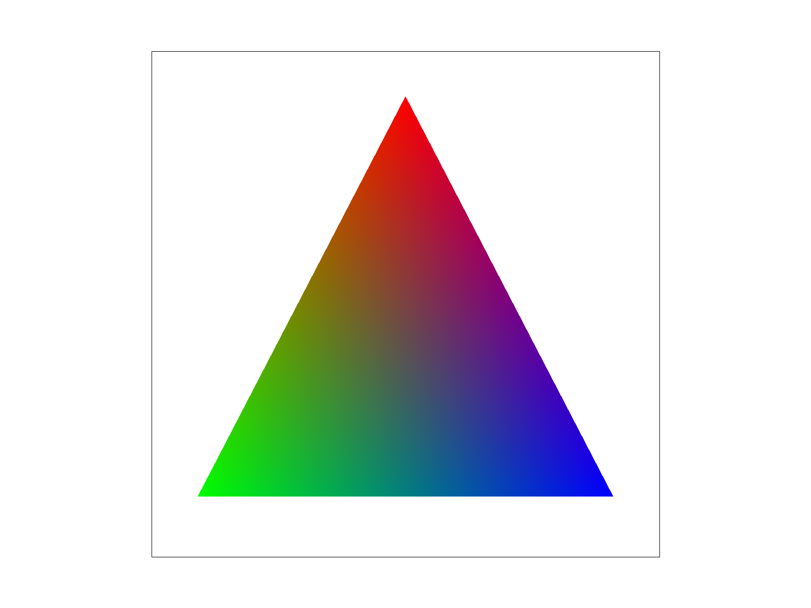
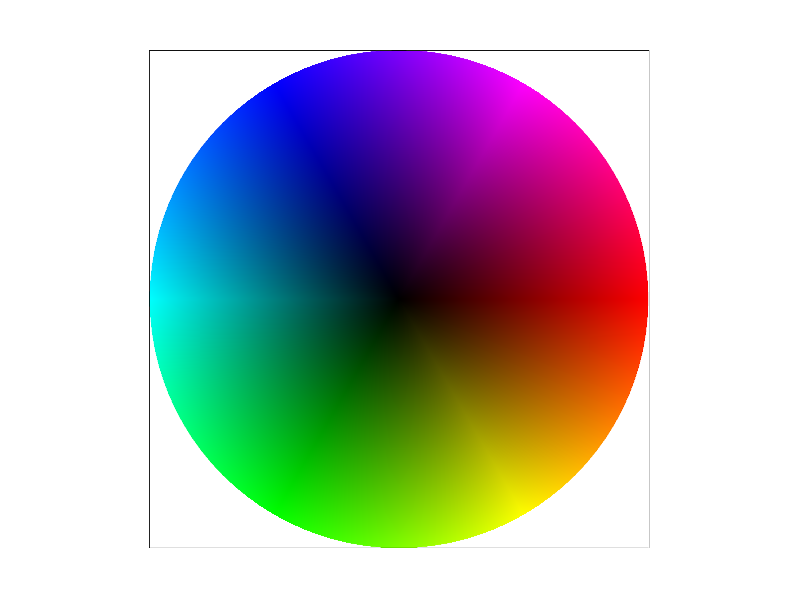
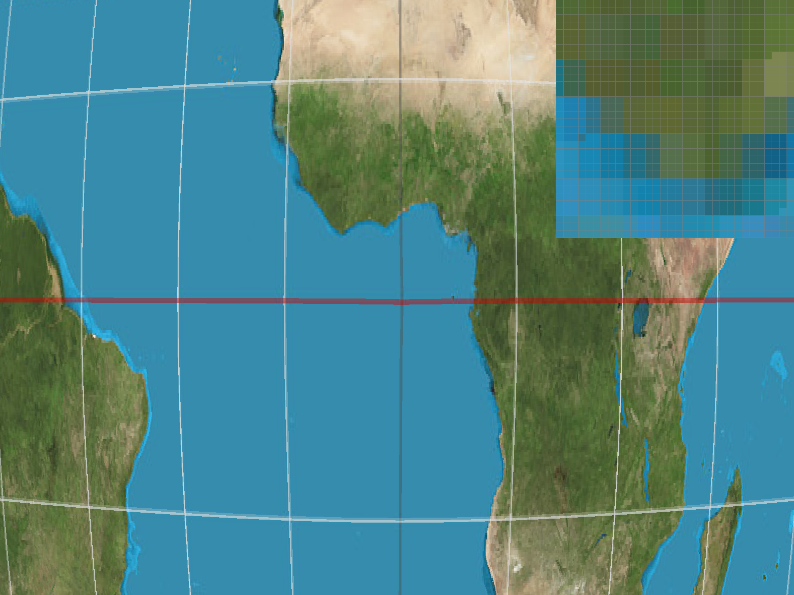
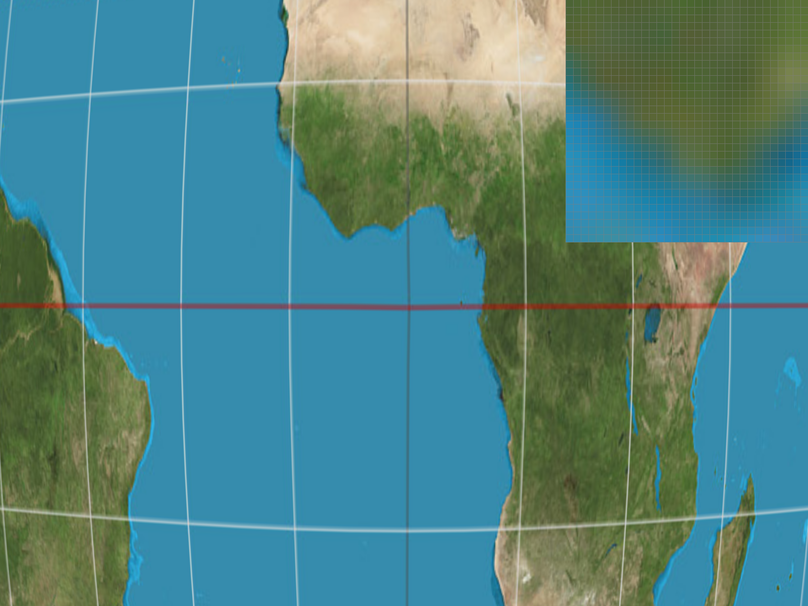
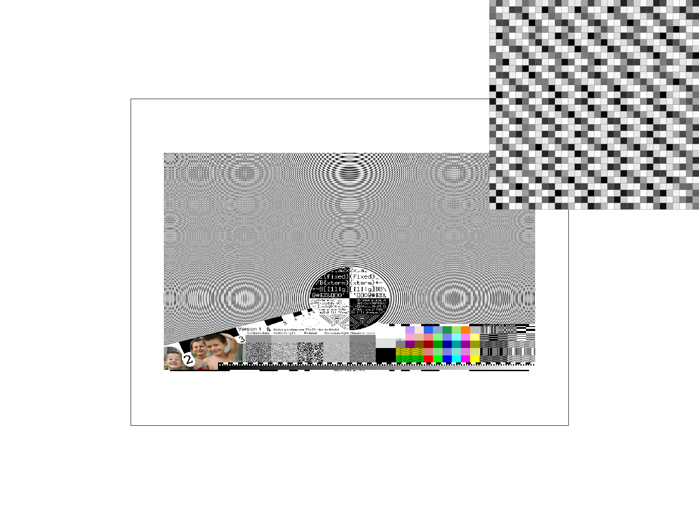

CS184/284A, Fall 2026
Team nineteen
This homework is about drawing SVG files as pixels. The renderer can draw triangles, move and rotate shapes, blend vertex colors, and put textures on triangles. It also uses supersampling and mipmaps to reduce jagged edges and texture noise.
The basic steps are to move the shapes into screen coordinates, check which samples are inside each triangle, and give those samples colors. At the end, the sample colors are averaged to get the final pixels.
One useful idea from this homework is that jagged shape edges and noisy textures need different fixes. More samples help with the edges. Bilinear sampling makes enlarged textures look smoother. Mipmaps help when a texture is drawn small. The pictures below show these differences.
All screenshots were saved with the renderer's S key. They are 1600 x 1200 PNG files. The close-up views use the pixel inspector from those same files.
The code is in the private homework repository. The screenshots and custom SVG files are in the write-up repository. No extra credit is claimed.
First, the code finds the triangle's bounding box using the smallest and largest x and y values. It rounds the box outward and clips it to the screen. Then it checks the pixels inside that box. With one sample per pixel, the sample is at (x + 0.5, y + 0.5).
The code checks which side of each edge the sample is on. A sample is inside when all three edge results have the same sign. Either all positive or all negative is accepted. This makes both clockwise and counterclockwise triangles work. A result of zero is also accepted, so points on an edge are drawn. A triangle with zero area is skipped.
edge(A, B, P) = (Bx - Ax)(Py - Ay) - (By - Ay)(Px - Ax)
The loop only visits the bounding box. It does three edge checks for each sample, so its work is proportional to the number of samples in that box. It does not check the whole screen.

The red tip looks jagged because each pixel has only one coverage sample. Some parts of the tip are too thin to hit a sample. Supersampling helps with this in Task 2.
Supersampling checks more than one point in each pixel. For s samples, the code uses an n by n grid, where n = sqrt(s). A rate of 4 gives a 2 by 2 grid. A rate of 16 gives a 4 by 4 grid. Each point is in the center of its small grid square.
sample = (x + (i + 0.5)/n, y + (j + 0.5)/n)
The sample_buffer has width * height * s colors. The samples for each pixel are stored next to each other. Pixel (x,y) starts at (y * width + x) * s. Sample (i,j) adds the offset j * n + i. The buffer is resized when the window size or sample rate changes.
At the start of a frame, the samples are cleared to white. Triangles update only the samples they cover. Points and lines fill all samples of their pixel. After all shapes are drawn, resolve_to_framebuffer averages each pixel's samples and converts the color to RGB bytes.
These are all basic/test4.svg at the default view, with the inspector in the same place. With 1 sample, the red edge has sharp steps. With 4 samples, some edge pixels become light red. With 16 samples, there are more shades along the edge. This happens because a pixel can be partly covered instead of just covered or empty.
One problem showed up at 9 samples. Rounding put a point that was exactly on an edge just outside it. The code now scales the coordinates by 2n so sample centers are integers. This fixed that test.
The three transforms use 3 by 3 matrices. Translation moves a point by dx and dy. Scaling multiplies its x and y coordinates by sx and sy. Rotation uses sine and cosine. The input angle is in degrees, so it is converted to radians first.
The goal for the robot was to make it wave while taking a step. One arm is raised and bent. One knee is also bent, and the body is tilted a little. The body is teal and the hands and feet are yellow.
The robot uses groups inside other groups. A translation puts each shoulder or hip at the right position. A rotation then moves that arm or leg around the joint. The elbow group is inside the arm group. This means the forearm and hand move when the upper arm moves.
The outside group moves and tilts the whole robot. The head and raised hand also use scaling to change their size. The order matters because moving a shape and then rotating it can give a different result from rotating it first. With these matrices, the transform on the right is applied first. The custom file is saved as my_robot.svg.
Barycentric coordinates give three weights for a point in a triangle. Each weight belongs to one vertex, and the weights add up to 1. At a vertex, its weight is 1 and the other two are 0. On an edge, the weight of the opposite vertex is 0.
P = a*A + b*B + c*C, where a + b + c = 1
The code finds the weights using the areas of three smaller triangles. Each area is divided by the area of the full triangle. It then multiplies each vertex color by its weight and adds the results. This is done for every covered sample.
color = a*colorA + b*colorB + c*colorC


The triangle on the left has a red top vertex, a green bottom-left vertex, and a blue bottom-right vertex. A point near the top gets more red. The bottom edge mixes only green and blue. At the center where all three weights are equal, each color contributes one third.
The color wheel on the right uses the default view and 1 sample per pixel. The colors blend across each triangle. The extra RGB example is saved as rgb_triangle.svg.
Pixel sampling chooses a color from a texture image. First, the code uses barycentric weights to find the sample's UV coordinates. It converts UV to a texture position using u * (width - 1) and v * (height - 1). Positions at the image edge are clamped so they stay inside the texture.
Nearest sampling rounds the position and uses that one texel. A texel is a pixel in the texture. Bilinear sampling uses the four nearby texels. It blends the two colors in each row, then blends those two results.


These pictures use texmap/test1.svg with L_ZERO. The zoom and inspector position are the same. Nearest at 1 sample looks blocky near the coast. At 16 samples, some block edges get smoother. Bilinear already looks smoother at 1 sample. Going to 16 samples makes a smaller difference for bilinear.
The difference is easiest to see when zoomed in, since one texel can cover several screen pixels. Nearest repeats the same color across a block. Bilinear blends the colors between blocks. When zoomed far out, bilinear can still miss small details. That is where mipmaps help.
Mipmaps are smaller copies of a texture. Each level averages detail from the level before it. Level sampling picks which copy to use. A smaller copy helps when many texels need to fit into one screen pixel.
The code finds UV at the sample position, one pixel to the right, and one pixel down. It subtracts the original UV to get the two changes. The u changes are multiplied by the full texture width. The v changes are multiplied by its height.
dx = ((ux - u)*W, (vx - v)*H)
dy = ((uy - u)*W, (vy - v)*H)
The longer of these two vectors estimates how much texture one screen pixel covers. The code takes log2 of that length to get the level. The result is clamped between 0 and the last available level. These UV changes are based on one full screen pixel, even when supersampling is on.
L_ZERO always uses the original texture. L_NEAREST rounds to the closest mip level. L_LINEAR samples the two levels around the result and blends them. Nearest or bilinear pixel sampling can be used with any of these. Bilinear pixels plus linear levels is called trilinear filtering.
More samples per pixel help with triangle edges. They also average more texture samples. But 16 samples means storing and shading 16 colors for every pixel, so it uses much more memory and takes more time.
Bilinear sampling reads four texels instead of one. It takes more work than nearest sampling, but it does not need another texture image. It mainly helps when the texture is enlarged.
Mipmaps need extra texture memory. For a square power-of-two texture, the full chain uses about one third more memory than the original image. They help most when the texture is made smaller. Linear level sampling reads two levels, so it costs more than nearest level sampling, but the changes between levels are smoother.
One bug was that the starter loop did not fill the last mip levels. Those levels came out black. The loop now fills the whole chain. The code also uses references to the mip levels so it does not copy a whole image for each sample.
The PNG used here is Zone plate boys by AlbertCahalan from Wikimedia Commons. It has lots of thin lines and small patterns. The SVG puts it on a rectangle made from two triangles. All four pictures use 1 sample per pixel and the same view.

The first picture has strong false patterns and looks noisy. Bilinear at level zero makes it a little smoother, but the patterns are still there. Using the nearest mip level removes more of the fine detail. Using bilinear with that mip level looks the smoothest here. Some detail is lost, and some aliasing is still visible.
The original texture is 1200 x 900. It is drawn in an 850 x 500 pixel rectangle. The larger texture-to-screen ratio is 900/500 = 1.8. Its log2 is about 0.848, so L_NEAREST picks level 1. The top row uses level 0 and the bottom row uses level 1.
There are 40 passing code checks. Also, 27 of the 32 reference PNGs match exactly. The color wheel has five pixels that differ by one RGB unit. The two thin-triangle tests differ at a few edge pixels. The lion and sphere differ because the starter does not handle their partly transparent strokes.
Image credit: AlbertCahalan, Zone plate boys, 2007, CC BY-SA 3.0. The original PNG is unchanged. The filtered Task 6 screenshots use the same license. Codex helped with the code, testing, and write-up.